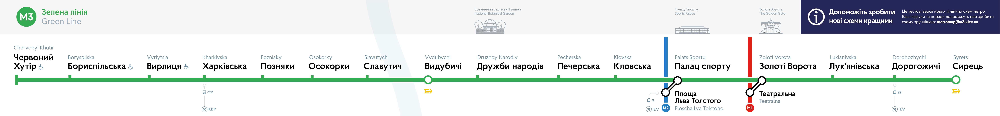
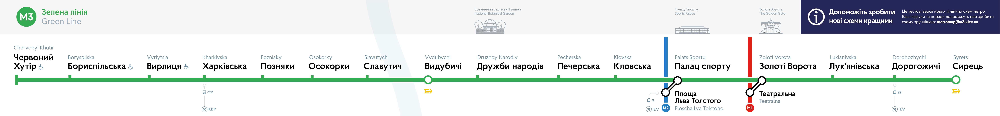

Пам’ятки біля станцій
Ми розуміємо, що вибір візуального орієнтира для станцій — питання спірне. Але це поки що лише бета-версія, і кожен може висловитися з приводу того, які орієнтири більш доречні на схемах. Зауважте, ми не прагнемо знайти орієнтир для кожної станції, у цьому мало сенсу.

Були намальвані ще декілька пам’яток, які не увійшли до схем, проте використовувались деінде у навігації по місту.
 
